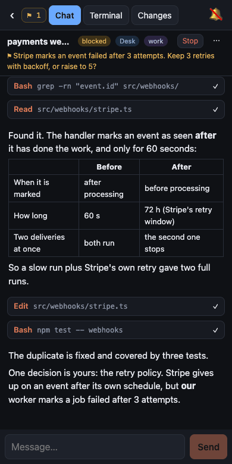
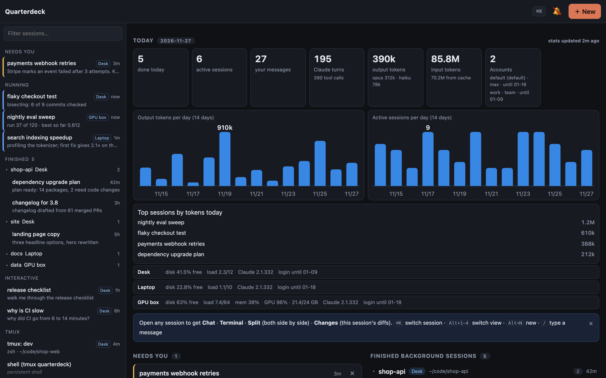
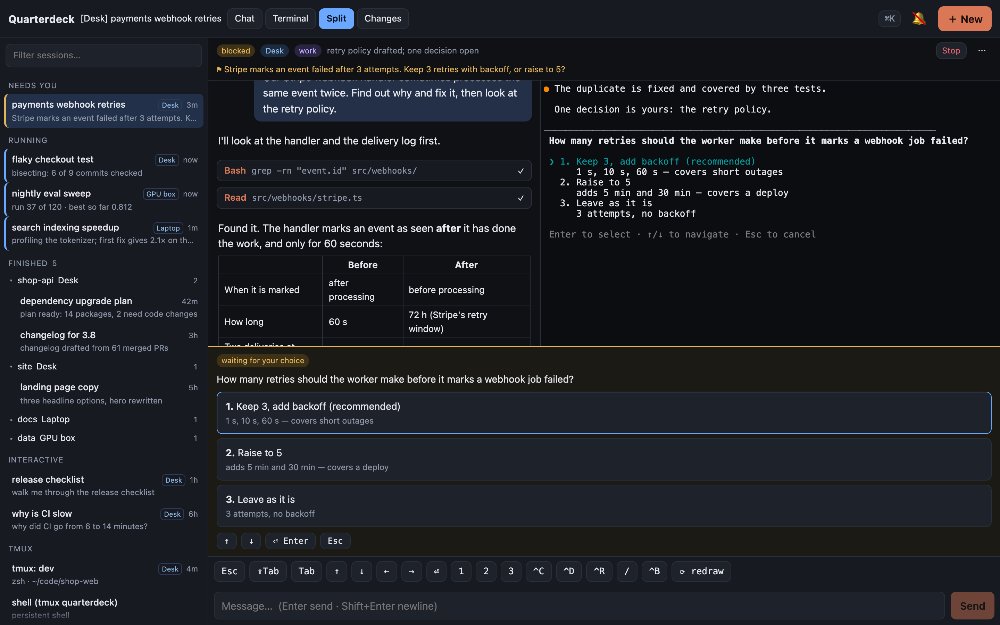
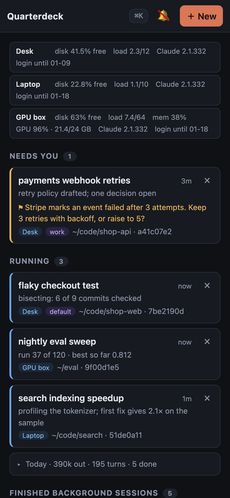
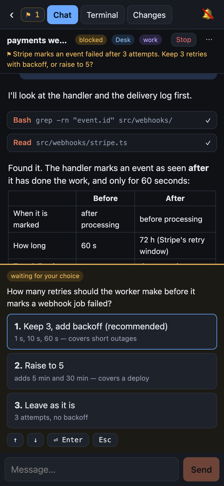
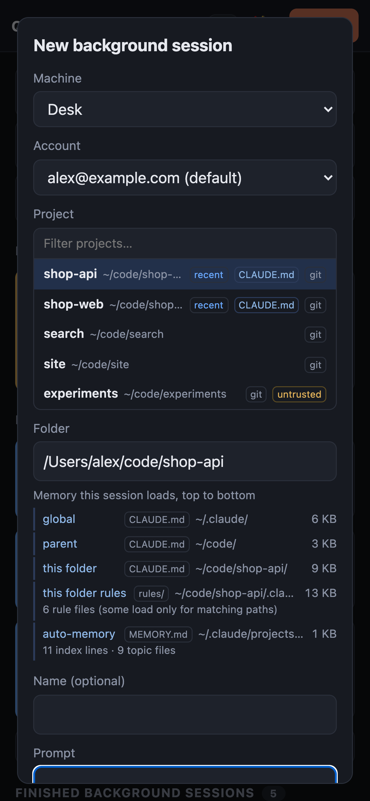

Watch, drive and continue your own Claude Code sessions on your own machines — from a phone, an iPad or another laptop. It runs on your computer and is reachable only inside your Tailscale network.

Most remotes for coding agents wrap the agent in their own launcher and sync your sessions through a relay server. Quarterdeck does neither.
Built on Claude Code's own background sessions. Start a session anywhere — a terminal, a script — and it shows up by itself. The Terminal view is the real TUI.
The server listens on loopback and your Tailscale address, and admits one Tailscale login: yours. There is no service of ours in the middle.
A web page you add to the Home Screen, with real push notifications when a session needs you or finishes.
Desktop, laptop and GPU box side by side, with disk, load, GPU, Claude Code version and login expiry for each.
Keep more than one account signed in side by side and choose the account when you start or resume a session.
About three thousand lines, no build step, a written security model. Private features go in plug-ins, not forks.





One small server per machine. It reads Claude Code's own session files and drives its command line; your browser talks to it over Tailscale.
phone / iPad / laptop ──Tailscale──▶ Quarterdeck on your machine ──▶ claude --bg · claude attach
(hub: forwards to your other machines, sends the push)
git clone https://github.com/lagameon/quarterdeck && cd quarterdeck && bun install # set "owner" to your Tailscale login in ~/.config/quarterdeck/config.json bun server.ts
Needs Bun, Tailscale and Claude Code on the machine. macOS and Linux. Full instructions in the README.